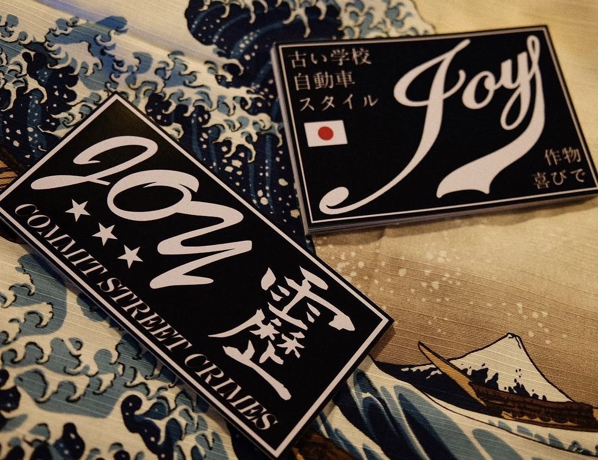

Printwork.
Ongoing.
Stickers and transfer vinyls have long been a popular addition to any modified car. Throughout the 90s people often plastered their cars with stickers to the extent that they couldn’t even see out their windows, which contributed to the popularity of the sticker bombing art trend of the late 90s and early 2000s. Applying stickers and banners to your car, also known as ‘sticker tuning’ is still extremely popular today, even more so with advancements in printing and cutting technology, allowing for radical, eye-catching designs.
Joy-Supply has stocked over 100 original printed slap sticker designs. I have designed a complete range in varying colours, styles and shapes. Transfer vinyls, colloquially known as die cuts, are stickers cut from vinyl sheets and applied using transfer tape. All die cuts are made in house by hand using a plotter machine with a fine blade.
More on this project: https://www.instagram.com/p/CTJLl8NHILS/?img_index=1 https://www.instagram.com/p/CVtvzP6vY1C/?img_index=1 https://www.instagram.com/p/CQptdjKsRu9/?img_index=1 https://www.instagram.com/p/CPfrosHMf9o/ https://www.instagram.com/p/CPSC19ssprE/?img_index=1 https://www.instagram.com/p/COCoKRvHsOW/?img_index=1
